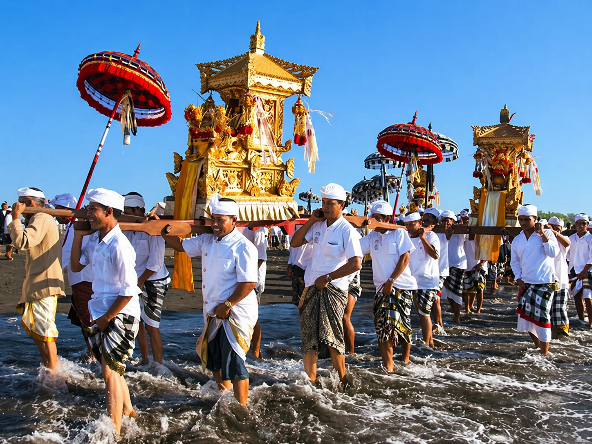
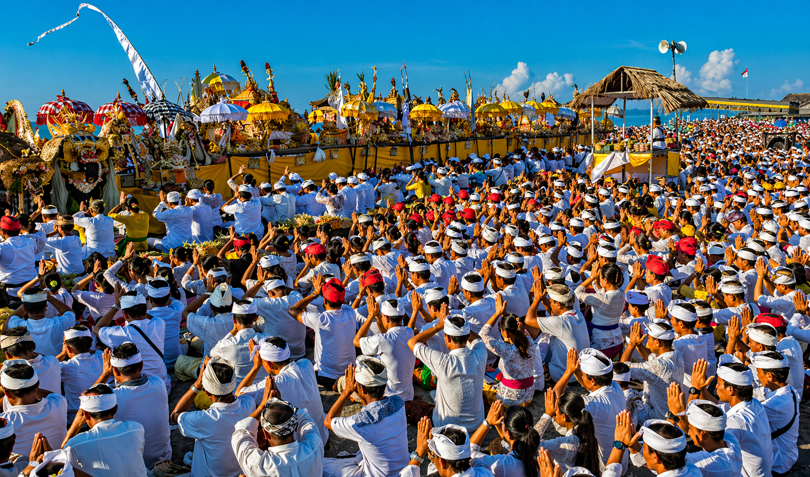

Melasti Gallery



SACRED WATER CEREMONY
A breathtaking purification journey where Bali walks to the water before entering the silence of Nyepi.
Melasti is one of the most important ceremonies in Balinese Hinduism. Villagers walk together in ceremonial dress while carrying sacred temple heirlooms, umbrellas, offerings, and symbols of devotion toward the sea, lake, or river.
In Balinese belief, water is the source of life and purification. Through prayer and ritual cleansing, Melasti removes spiritual impurities and prepares the community for a renewed new year.
What visitors see is not a performance, but living faith. The white clothing, ocean backdrop, incense, chants, and unity of the people create one of the most unforgettable cultural moments in Bali.
Melasti reflects the Balinese philosophy of harmony between humans, nature, and the divine restoring balance before Nyepi begins.
Melasti is commonly held around 3–4 days before Nyepi, before the Tawur Kesanga and Pangrupukan celebrations.
Because Nyepi follows the Saka calendar, Melasti usually takes place in March.
First check the official Nyepi date. Then count backward around four days. That period is the best estimate for Melasti ceremonies.
Sanur Beach, Masceti Beach, Tanah Lot area, and many village coastlines become spectacular places to witness Melasti.
Morning light gives the best atmosphere and photography conditions.
Choose modest clothing and avoid beachwear during sacred moments.
Stay outside prayer areas and let worshippers pass first.
Sometimes the most memorable moment is watching quietly, not only taking photos.

